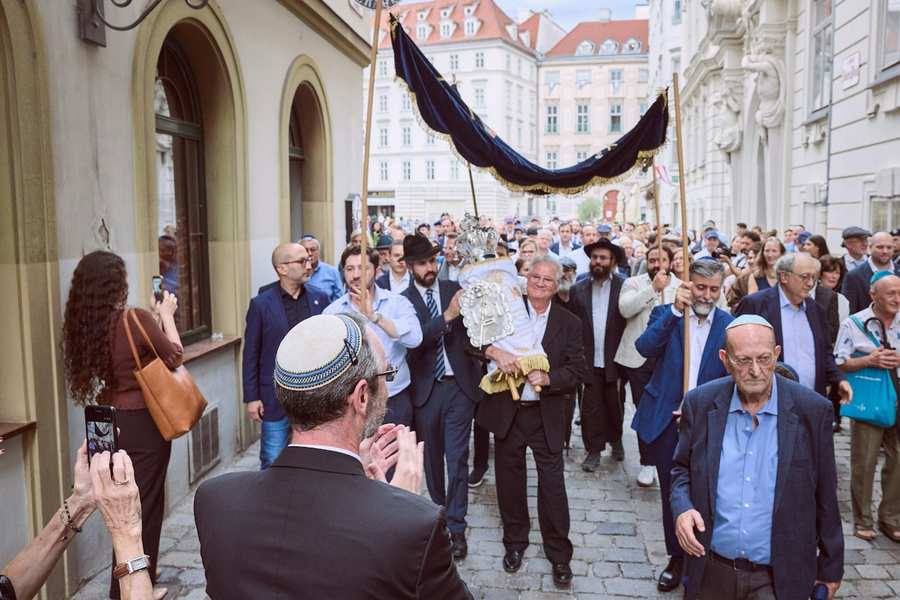
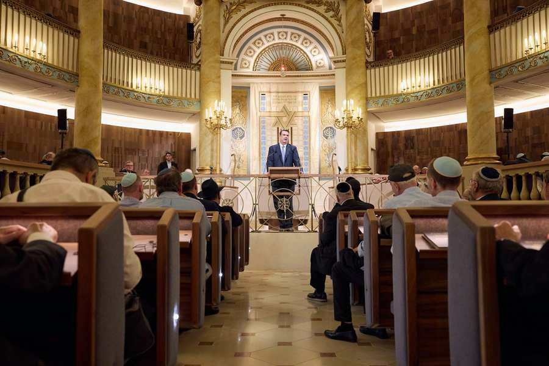

9 сентября 2026 года, за два дня до начала Великих праздников, еврейская община торжественно вновь открыла свой духовный центр на Зайтенштеттенгассе после десяти с половиной месяцев строительства.
Президент IKG Оскар Дойч: «Мы вернулись домой. Городская синагога была закрыта, наша общинная жизнь никогда не прекращалась. Тем, что мы сегодня снова молимся здесь, мы обязаны Австрийской Республике, городу Вене и сотням жертвователей из общины и их друзей в стране и за рубежом. Они не только сохранили здание, но и вложили средства в будущее еврейской Вены».
Синагога была заново освящена церемонией установки нового свитка Торы. Тору принесли с Юденплац в городская синагога процессией. Около 450 членов общины отпраздновали здесь открытие. Затем прикреплялись мезузоты — свитки пергамента со стихами Торы, которые в иудаизме прикрепляются к дверным косякам.
Главный раввин Джарон Энгельмайер: «Открытие городской синагоги является сильным знаком на будущее. Поскольку это единственная действующая синагога, пережившая Холокост, ее восстановление символически является инвестицией в будущее и еврейскую жизнь в Вене и Австрии».
Предварительно компания Austrian Post AG представила собственную марку в честь 200-летия городской синагоги и открыла 9 сентября специальное почтовое отделение со специальной маркой на Зайтенштеттенгассе. Марка, разработанная Мелани Массегг, дает представление об интерьере синагоги, имеет номинал 2 евро (тариф: International S Economic Welt) и выпущена тиражом 150 000 экземпляров.

Фотографии: IKG/Розовый
Восстановленный и отреставрированный городская синагога
Были реализованы строительные, охранные и противопожарные меры, меры доступности, а также пространственная реорганизация входных зон с отдельной станцией для посетителей экскурсий (начиная с зимы 2026 года). Бима, приподнятый кафедра, с которой читается Тора, и все поверхности были адаптированы в соответствии с оригиналом. Кроме того, компоненты дизайна были реализованы на основе дизайнерских идей Йозефа Корнхойзеля.

Фотографии: IKG/Розовый
Также были обнаружены исторические строительные конструкции, такие как пол под Бимой из будапештского мрамора и каменный фундамент. Все структурные меры были выполнены KENH Architects в тесном сотрудничестве с Федеральным управлением памятников и техническим отделом Israelitische Kultusgemeinde Wien (Еврейская община Вены). Помимо исторического облика помещения и улучшенной акустики, реставрация и реконструкция служат модернизации общественной инфраструктуры: городская синагога будет пригоден для будущего будущих поколений - и останется домом открытых дверей, который вносит свой вклад в сосуществование Вены и Австрии.
Строительные работы прошли в запланированные десять с половиной месяцев. На следующих этапах будут отремонтированы общественный центр и фасад городской синагоги. Общая стоимость реставрации и реконструкции составляет 10,5 миллионов евро. По трети поступает от федерального правительства, города Вены и частных пожертвований. Около 95% общих затрат уже оплачено.


Источник изображения: IKG/Morgensztern
О городской синагоге
Городская синагога — духовный центр еврейской общины Вены и крупнейшая синагога Австрии. Это единственная синагога в Вене, пережившая ноябрьские погромы 1938 года и действующая до сих пор.
Связанный контент